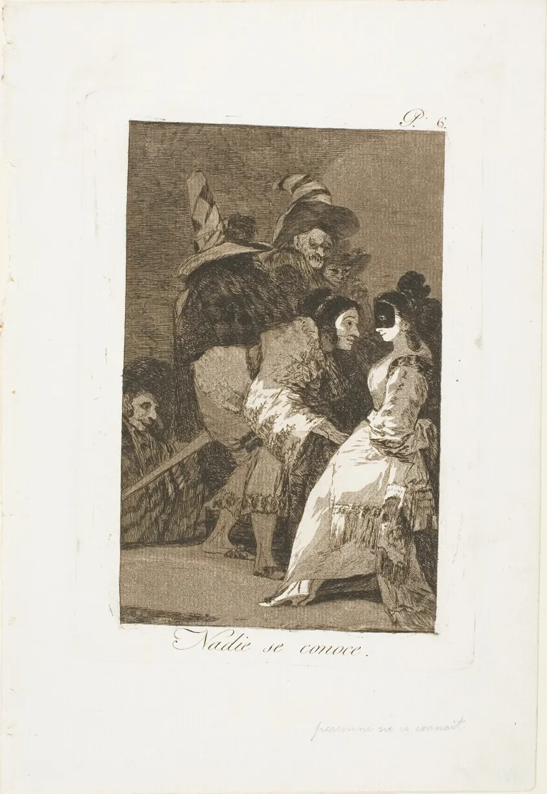

Zain DanaHarper
Open tools that check AI answers, prose and the posts around you. The engine, game and films are built beside them.
The rooms
-
42 / 41
Fail, held -
It is important to note that this release really represents a significant step forward.
Articulate
Find the filler in your writing, line by line.
-
state-owned,
Wikidata
RussiaDaylight Commons
See who is behind a reply before you believe it.
-
load_config touches FileSystem and never said so
BuildLang
Know what a program can touch before it runs.
-
0.135
over 0.12raw-native
Lights each frame twice and tells you how far the fast one drifted.
-
Low Water
Low Water
A narrative game painted and played on raw-native.
-
Films
Essays and films
Investigations and short films on how claims get checked, and who checks them.
-
Work and CV
Support and QA, evaluation tooling and field work.